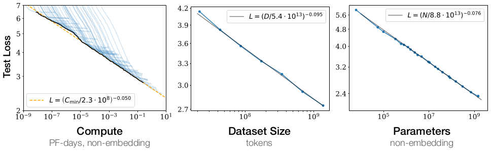
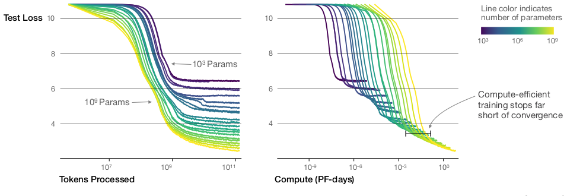
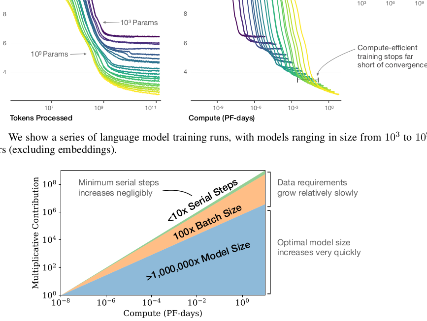
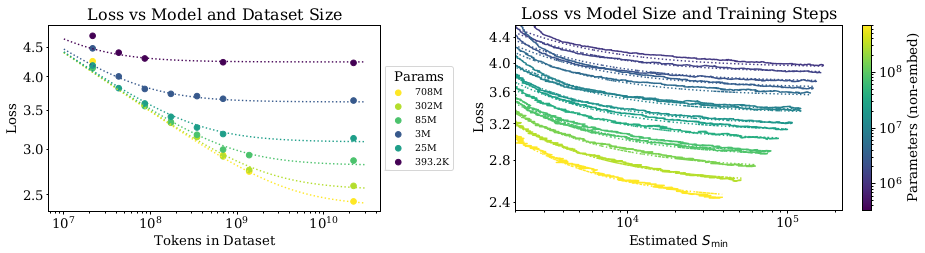
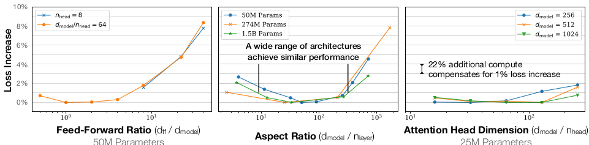
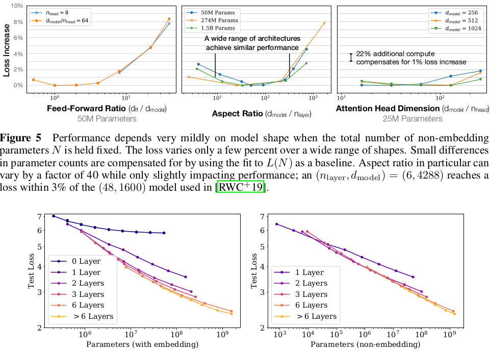
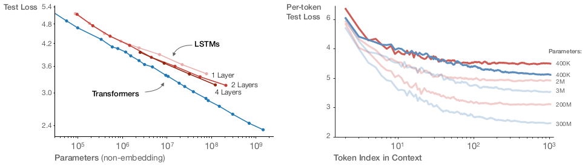
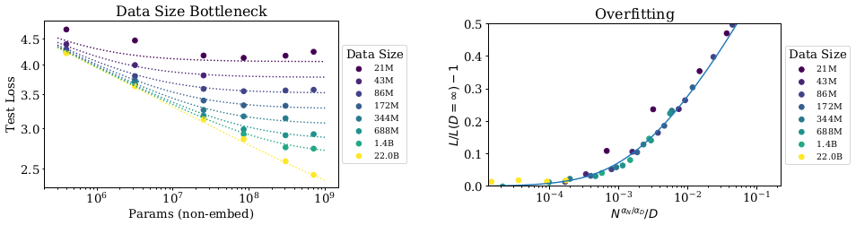
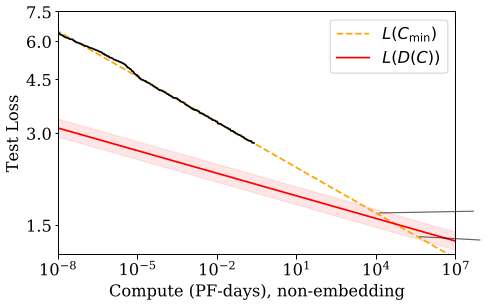

我们研究语言模型在交叉熵损失上的经验缩放定律。损失随模型大小、数据集大小和训练所用计算量呈幂律缩放，其中一些趋势跨越超过七个数量级。其他架构细节，如网络宽度或深度，在很宽范围内影响极小。简单方程刻画了过拟合对模型/数据集大小的依赖，以及训练速度对模型大小的依赖。这些关系使我们能够确定固定计算预算的最优分配。更大的模型显著更具样本效率，因此最优计算高效的训练包括在相对适中的数据上训练非常大的模型，并在显著早于收敛时停止。
1 引言 2；2 背景与方法 6；3 经验结果与基本幂律 7；4 绘制无限数据极限与过拟合 10；5 模型大小和训练时间的缩放定律 12；6 计算预算的最优分配 14；7 相关工作 18；8 讨论 18；附录 20；A 幂律总结 20；B 计算高效前沿的经验模型 20；C 注意事项 22；D 补充图 23。
语言为人工智能研究提供了一个自然领域，因为绝大多数推理任务都可以用语言高效表达和评估，而世界上的文本为通过生成建模进行无监督学习提供了丰富数据。深度学习最近在语言建模方面取得了快速进展，最先进模型 [RNSS18, DCLT18, YDY+19, LQG+19, RSR+19] 在许多具体任务 [WPN+19] 上接近人类水平性能，包括组合连贯的多段提示文本样本 [RWC+19]。
人们可能期望语言建模性能取决于模型架构、神经模型的大小、训练它们所用的计算能力，以及可用于该训练过程的数据。在这项工作中，我们将经验研究语言建模损失对所有这些因素的依赖，重点关注 Transformer 架构 [VSP+17, LSP+18]。语言任务性能的高上限和低下限使我们能够研究超过七个数量级尺度上的趋势。
贯穿全文，我们将观察到性能作为训练时间、上下文长度、数据集大小、模型大小和计算预算函数的精确幂律缩放。
我们对 Transformer 语言模型的关键发现如下：

性能强烈依赖规模，弱依赖模型形状：模型性能最强烈依赖规模，规模由三个因素组成：模型参数数量 \(N\)（不包括嵌入）、数据集大小 \(D\) 和训练所用计算量 \(C\)。在合理范围内，性能对其他架构超参数（如深度与宽度）依赖非常弱。（第 3 节）
平滑幂律：当不受其他两个因素瓶颈限制时，性能与三个规模因素 \(N,D,C\) 中的每一个都呈幂律关系，趋势跨越超过六个数量级（见图 1）。我们在上端没有观察到偏离这些趋势的迹象，尽管性能最终必须在达到零损失之前变平。（第 3 节）
过拟合的普遍性：只要我们同步放大 \(N\) 和 \(D\)，性能就可预测地改善；但如果保持 \(N\) 或 \(D\) 固定而另一个增加，则进入收益递减区域。性能惩罚可预测地取决于比值 \(N^{0.74}/D\)，这意味着每当我们把模型大小增加 8 倍时，只需将数据增加约 5 倍即可避免惩罚。（第 4 节）
训练的普遍性：训练曲线遵循可预测的幂律，其参数大致独立于模型大小。通过外推训练曲线的早期部分，我们可以大致预测如果训练更长时间将实现的损失。（第 5 节）
迁移随测试性能改善：当我们在与训练分布不同的文本上评估模型时，结果与训练验证集上的结果强相关，损失上有大致恒定的偏移——换句话说，迁移到不同分布会带来恒定惩罚，但除此之外大致与训练集性能同步改善。（第 3.2.2 节）
样本效率：大模型比小模型更具样本效率，以更少优化步骤（图 2）和更少数据点（图 4）达到相同性能水平。
收敛是低效的：在固定计算预算 \(C\) 下工作，但对模型大小 \(N\) 或可用数据 \(D\) 没有其他限制时，我们通过训练非常大的模型并显著早于收敛停止来获得最优性能（见图 3）。因此，最大计算高效训练将比基于训练小模型至收敛所期望的样本效率高得多，数据需求随训练计算增长非常缓慢，为 \(D\sim C^{0.27}\)。（第 6 节）
最优批量大小：训练这些模型的理想批量大小大致仅是损失的幂律，并且继续可通过测量梯度噪声尺度 [MKAT18] 确定；对于我们可训练的最大模型，在收敛时约为 100—200 万词元。（第 5.1 节）
综合来看，这些结果表明，当我们适当放大模型大小、数据和计算时，语言建模性能平滑且可预测地改善。我们预期更大的语言模型将比当前模型表现更好，并更具样本效率。


当性能仅受非嵌入参数数量 \(N\)、数据集大小 \(D\) 或最优分配的计算预算 \(C_{\min}\) 限制时，训练用于自回归语言建模的 Transformer 的测试损失可以用幂律预测（见图 1）：
1. 对于参数数量有限、在足够大的数据集上训练至收敛的模型：
2. 对于在有限数据集上训练并使用早停的大模型：
3. 当使用有限计算量、足够大的数据集、最优大小的模型和足够小的批量（最优利用计算）训练时：

这些关系在 \(C_{\min}\) 的八个数量级、\(N\) 的六个数量级以及 \(D\) 的两个数量级以上成立。它们对模型形状和其他 Transformer 超参数（深度、宽度、自注意力头数）依赖非常弱，具体数值与 WebText2 训练集 [RWC+19] 相关。幂律 \(\alpha_{\mathrm{N}},\alpha_{\mathrm{D}},\alpha_{\mathrm{C}}^{\min}\) 指定当我们放大 \(N,D,C_{\min}\) 时预期的性能改善程度；例如，参数数量翻倍会使损失小一个因子 \(2^{-\alpha_{N}}=0.95\)。\(N_{\mathrm{c}},C_{\mathrm{c}}^{\min},D_{\mathrm{c}}\) 的精确数值取决于词表大小和分词，因此没有根本意义。
决定数据并行速度/效率权衡的关键批量大小（[MKAT18]）也大致服从 \(L\) 的幂律：
式 (1.1) 和 (1.2) 一起表明，随着模型大小增加，我们应按 \(D\propto N^{\frac{\alpha_{N}}{\alpha_{D}}}\sim N^{0.74}\) 次线性地增加数据集大小。事实上，我们发现有一个单一方程结合 (1.1) 和 (1.2)，支配对 \(N\) 和 \(D\) 的同时依赖以及过拟合程度：
拟合见图 4 左。我们推测这种函数形式也可能参数化其他生成建模任务的训练对数似然。
在无限数据极限下，对给定模型训练有限数量参数更新步 \(S\) 时，经过初始瞬态期后，学习曲线可准确拟合为（见图 4 右）
其中 \(S_{c}\approx2.1\times10^{3}\)，\(\alpha_{S}\approx0.76\)，\(S_{\min}(S)\) 是使用式 (5.4) 估计的最小可能优化步数（参数更新）。
在固定计算预算 \(C\) 内训练但无其他约束时，式 (1.6) 预测最优模型大小 \(N\)、最优批量大小 \(B\)、最优步数 \(S\) 和数据集大小 \(D\) 应按如下增长：
其中
这与经验最优结果 \(N\propto C_{\min}^{0.73}\)、\(B\propto C_{\min}^{0.24}\)、\(S\propto C_{\min}^{0.03}\) 密切匹配。随着计算预算 \(C\) 增加，应主要投向更大的模型，而训练时间或数据集大小不会急剧增加（见图 3）。这也意味着随着模型变大，它们变得越来越样本高效。实践中，由于硬件限制，研究人员通常训练较小模型的时间比最大计算高效所需更长。最优性能取决于总计算，呈幂律（见式 (1.3)）。
我们为式 (1.5) 提供一些基本理论动机，分析学习曲线拟合并讨论其对训练时间的含义，并按词元分解结果。我们还与 LSTM 和循环 Transformer [DGV+18] 进行简要比较。
我们使用以下记号：
我们在 WebText2 上训练语言模型，这是 WebText [RWC+19] 数据集的扩展版本，使用字节对编码 [SHB15] 分词，词表大小 \(n_{\mathrm{vocab}}=50257\)。我们优化在 1024 词元上下文上平均的自回归对数似然（即交叉熵损失），这也是我们的主要性能指标。我们记录 WebText2 测试分布以及若干其他文本分布上的损失。我们主要训练仅解码器 [LSP+18, RNSS18] Transformer [VSP+17] 模型，但也训练 LSTM 模型和 Universal Transformer [DGV+18] 以比较。
我们用超参数 \(n_{\mathrm{layer}}\)（层数）、\(d_{\mathrm{model}}\)（残差流维度）、\(d_{\mathrm{ff}}\)（中间前馈层维度）、\(d_{\mathrm{attn}}\)（注意力输出维度）和 \(n_{\mathrm{heads}}\)（每层注意力头数）参数化 Transformer 架构。我们在输入上下文中包括 \(n_{\mathrm{ctx}}\) 个词元，除另有说明外 \(n_{\mathrm{ctx}}=1024\)。
我们用 \(N\) 表示模型大小，定义为非嵌入参数数量：
其中我们排除了偏置和其他次要项。我们的模型还有嵌入矩阵中的 \(n_{\mathrm{vocab}}d_{\mathrm{model}}\) 参数，以及位置嵌入使用的 \(n_{\mathrm{ctx}}d_{\mathrm{model}}\) 参数，但在讨论“模型大小” \(N\) 时不包括这些；我们将看到这产生显著更干净的缩放定律。
评估 Transformer 的一次前向传播大致涉及
次加乘操作，其中因子 2 来自矩阵乘法中使用的乘累加操作。更详细的逐操作参数和计算计数见表 1。
| 操作 | 参数 | 每词元 FLOPs |
|---|---|---|
| 嵌入 | \((n_{\mathrm{vocab}}+n_{\mathrm{ctx}})d_{\mathrm{model}}\) | \(4d_{\mathrm{model}}\) |
| 注意力：QKV | \(n_{\mathrm{layer}}d_{\mathrm{model}}3d_{\mathrm{attn}}\) | \(2n_{\mathrm{layer}}d_{\mathrm{model}}3d_{\mathrm{attn}}\) |
| 注意力：掩码 | — | \(2n_{\mathrm{layer}}n_{\mathrm{ctx}}d_{\mathrm{attn}}\) |
| 注意力：投影 | \(n_{\mathrm{layer}}d_{\mathrm{attn}}d_{\mathrm{model}}\) | \(2n_{\mathrm{layer}}d_{\mathrm{attn}}d_{\mathrm{model}}\) |
| 前馈 | \(n_{\mathrm{layer}}2d_{\mathrm{model}}d_{\mathrm{ff}}\) | \(2n_{\mathrm{layer}}2d_{\mathrm{model}}d_{\mathrm{ff}}\) |
| 反嵌入 | — | \(2d_{\mathrm{model}}n_{\mathrm{vocab}}\) |
| 总计（非嵌入） | \(N=2d_{\mathrm{model}}n_{\mathrm{layer}}(2d_{\mathrm{attn}}+d_{\mathrm{ff}})\) | \(C_{\mathrm{forward}}=2N+2n_{\mathrm{layer}}n_{\mathrm{ctx}}d_{\mathrm{attn}}\) |
对于 \(d_{\mathrm{model}}>n_{\mathrm{ctx}}/12\) 的上下文和模型，每词元依赖上下文的计算成本仅占总计算量相对较小部分。由于我们主要研究 \(d_{\mathrm{model}}\gg n_{\mathrm{ctx}}/12\) 的模型，我们在训练计算估计中不包括上下文相关项。计入反向传播（约为前向传播计算的两倍），我们将估计的非嵌入计算定义为每个训练词元 \(C\approx6N\) 浮点运算。
除另有说明外，我们使用 Adam 优化器 [KB14] 训练模型固定 \(2.5\times10^{5}\) 步，批量大小为 512 个 1024 词元序列。由于内存限制，我们最大的模型（超过 1B 参数）使用 Adafactor [SS18] 训练。我们实验了多种学习率和计划，见附录 D.6。我们发现收敛结果在很大程度上独立于学习率计划。除另有说明外，我们数据中的所有训练运行使用学习率计划：3000 步线性预热，然后余弦衰减到零。
我们在 [RWC+19] 描述的 WebText 数据集扩展版本上训练模型。原始 WebText 数据集是截至 2017 年 12 月从 Reddit 出站链接抓取的网页，且至少获得 3 karma。在第二版 WebText2 中，我们加入 2018 年 1 月至 10 月期间 Reddit 出站链接，同样至少 3 karma。karma 阈值作为人们是否觉得链接有趣或有用的启发式。新链接文本用 Newspaper3k Python 库提取。总数据集包含 20.3M 文档，96 GB 文本和 \(1.62\times10^{10}\) 词（按 wc 定义）。然后应用 [RWC+19] 的可逆分词器，产生 \(2.29\times10^{10}\) 词元。我们保留 \(6.6\times10^{8}\) 词元作为测试集，并测试 Books Corpus [ZKZ+15]、Common Crawl [Fou]、English Wikipedia 和一组公开 Internet Books 的类似准备样本。
为刻画语言模型缩放，我们训练各种模型，变化多个因素，包括：


本节展示数据及经验动机拟合，理论分析留待后续章节。
当总非嵌入参数计数 \(N\) 固定时，Transformer 性能对形状参数 \(n_{\mathrm{layer}},n_{\mathrm{heads}},d_{\mathrm{ff}}\) 依赖非常弱。为建立这些结果，我们训练固定大小但变化单个超参数的模型。这在 \(n_{\mathrm{heads}}\) 情况下最简单。变化 \(n_{\mathrm{layer}}\) 时，我们同时变化 \(d_{\mathrm{model}}\)，保持 \(N\approx12n_{\mathrm{layer}}d_{\mathrm{model}}^2\) 固定。类似地，为在固定模型大小下变化 \(d_{\mathrm{ff}}\)，我们也同时变化 \(d_{\mathrm{model}}\)，如表 1 参数计数要求。如果更深的 Transformer 有效表现为较浅模型的集成，如 ResNet [VWB16] 所建议，则 \(n_{\mathrm{layers}}\) 独立性将成立。结果见图 5。
图 6 展示各种模型的性能，从形状 \((n_{\mathrm{layer}},d_{\mathrm{model}})=(2,128)\) 的小模型到十亿参数模型，形状从 \((6,4288)\) 到 \((207,768)\)。这里我们在完整 WebText2 数据集上训练至接近收敛，未观察到过拟合（可能最大模型除外）。
如图 1 所示，我们发现随非嵌入参数计数 \(N\) 的稳定趋势，可拟合为式 (1.5) 的第一项，因此

为观察这些趋势，关键是研究性能作为 \(N\) 的函数；如果改用总参数计数（包括嵌入参数），趋势会在一定程度上被掩盖（见图 6）。这表明嵌入矩阵可以做得更小而不影响性能，如近期工作 [LCG+19] 所见。
尽管这些模型在 WebText2 数据集上训练，它们在各种其他数据集上的测试损失也是 \(N\) 的幂律，幂几乎相同，如图 8 所示。
图 7 比较 LSTM 和 Transformer 性能作为非嵌入参数计数 \(N\) 的函数。LSTM 使用相同数据集和上下文长度训练。从图中可见，LSTM 在上下文早期出现的词元上表现与 Transformer 一样好，但在后期词元上无法匹配 Transformer 性能。我们在附录 D.5 给出性能与上下文位置之间的幂律关系，其中更大模型的幂越来越大，表明快速识别模式的能力改善。
我们还在附录图 17 比较标准 Transformer 与循环 Transformer [DGV+18]。这些模型复用参数，因此作为 \(N\) 的函数表现略好，代价是每参数额外计算。
我们还在额外文本数据分布上测试模型。这些数据集上的测试损失作为模型大小的函数见图 8；所有情况下模型仅在 WebText2 数据集上训练。我们看到其他数据分布上的损失随模型大小平滑改善，与 WebText2 上的改善直接平行。我们发现泛化几乎完全取决于分布内验证损失，不依赖训练持续时间或接近收敛程度。也未观察到对模型深度的依赖（见附录 D.8）。
图 1 展示测试损失作为数据集大小 \(D\)（词元）和训练计算 \(C\) 函数的经验趋势。
对于 \(D\) 趋势，我们训练 \((n_{\mathrm{layer}},n_{\mathrm{embd}})=(36,1280)\) 模型在 WebText2 数据集固定子集上。当测试损失停止下降时停止训练。所得测试损失可用简单幂律拟合：
数据与拟合见图 1。
训练期间使用的总非嵌入计算可估计为 \(C=6NBS\)，其中 \(B\) 是批量大小，\(S\) 是参数更新次数，因子 6 计入前向和反向传播。因此对给定 \(C\)，我们可以扫描所有 \(N\) 的模型，找到在步 \(S=\frac{C}{6BS}\) 上性能最好的模型。注意这些结果中批量大小 \(B\) 对所有模型固定，这意味着这些经验结果并非真正最优。我们将在后续节使用调整后的 \(C_{\min}\) 来产生更干净趋势。
结果见图 1 左图粗黑线。可拟合为
图中还包括单独学习曲线图像，以澄清单个模型何时最优。稍后更仔细研究计算最优分配。数据强烈表明样本效率随模型大小改善，附录图 19 也直接说明。
第 3 节发现语言建模性能若干基本缩放定律。这里研究大小 \(N\) 的模型在 \(D\) 词元数据集上训练、同时变化 \(N\) 和 \(D\) 时的性能。我们经验证明最优训练测试损失符合式 (1.5) 缩放定律。这为在控制过拟合下训练越来越大模型需要多少数据提供指导。
我们基于三个原则选择参数化 (1.5)（为方便重复）：
1. 词表大小或分词变化预期会以整体因子重新缩放损失。\(L(N,D)\)（以及所有损失模型）的参数化必须自然允许这种重新缩放。
2. 固定 \(D\) 并令 \(N\to\infty\)，整体损失应趋近 \(L(D)\)。反之，固定 \(N\) 并令 \(D\to\infty\)，损失必须趋近 \(L(N)\)。
3. \(L(N,D)\) 应在 \(D=\infty\) 处解析，因此其 \(1/D\) 级数展开具有整数幂。该原则的理论支持显著弱于前两个。
我们选择的 \(L(N,D)\) 满足第一个要求，因为可通过词表变化重新缩放 \(N_c,D_c\)。这也意味着 \(N_c,D_c\) 的值没有根本意义。

由于当测试损失停止改善时我们早停，并以相同方式优化所有模型，我们预期更大模型应总是比小模型表现更好。但在固定有限 \(D\) 下，我们也不预期任何模型能够接近最佳可能损失（即文本熵）。类似地，固定大小模型将受容量限制。这些考虑 Motivate 第二个原则。注意无限 \(D\) 下 \(L(N)\) 和无限 \(N\) 下 \(L(D)\) 的知识完全确定 \(L(N,D)\) 中所有参数。
第三个原则更具推测性。有一个简单而一般的理由预期过拟合在非常大 \(D\) 时按 \(\propto1/D\) 缩放。过拟合应与数据集的方差或信噪比 [AS17] 有关，而该量按 \(1/D\) 缩放。这一预期应适用于任何平滑损失函数，因为我们预期可在 \(D\to\infty\) 极限附近展开损失。然而，该论证假设 \(1/D\) 修正支配其他方差来源，如有限批量大小和优化效力的其他限制。没有经验确认，我们对其适用性不会很有信心。
第三个原则解释了式 (1.5) 中 \(N\) 与 \(D\) 角色的不对称性。类似的对称表达式可能存在，但它们不会有整数幂的 \(1/D\) 展开，并需要引入额外参数。
无论如何，我们将看到 \(L(N,D)\) 方程很好地拟合数据，这是对我们 \(L(N,D)\) ansatz 最重要的理由。
我们用 10% dropout 正则化所有模型，并跟踪测试损失，一旦不再下降就停止。结果见图 9，包括对式 (1.5) 四个参数 \(\alpha_N,\alpha_D,N_c,D_c\) 的拟合：
| 参数 | \(\alpha_N\) | \(\alpha_D\) | \(N_C\) | \(D_C\) |
|---|---|---|---|---|
| 值 | 0.076 | 0.103 | \(6.4\times10^{13}\) | \(1.8\times10^{13}\) |
我们获得极好拟合，例外是数据集缩小 1024 倍至约 \(2\times10^{7}\) 词元的运行。如此小数据集一个 epoch 仅 40 次参数更新。也许如此小数据集代表语言建模的不同区域，因为过拟合在训练早期就发生（见图 16）。还注意参数与第 3 节略有不同，因为这里拟合完整 \(L(N,D)\) 而非仅 \(L(N,\infty)\) 或 \(L(\infty,D)\)。
为绘制无限数据极限边界，我们可以直接研究过拟合程度。除最大模型外，使用完整 22B 词元 WebText2 数据集训练时未见明显过拟合，因此可将其视为 \(D=\infty\) 代表。于是可通过定义
并研究其作为 \(N,D\) 函数来比较有限 \(D\) 与无限数据极限。事实上，经验上 \(\delta L\) 仅依赖 \(N\) 和 \(D\) 的特定组合，如图 16 所示。这来自式 (1.5) 缩放定律，其意味着
注意大 \(D\) 时该公式也有 \(1/D\) 幂级数展开。
我们估计不同随机种子损失变化约为 0.02，这意味着当训练到收敛阈值内以避免过拟合时，我们需要
据此，小于 \(10^{9}\) 参数的模型可在 22B 词元 WebText2 数据集上以最小过拟合训练，但最大模型会遇到一些轻微过拟合。更一般地，该关系表明数据集大小可随模型大小次线性增长同时避免过拟合。然而注意这通常不代表最大计算高效训练。还应强调我们未在变化数据集和模型大小时优化正则化（如 dropout 概率）。
本节证明一个简单缩放定律很好描述损失作为模型大小 \(N\) 和训练时间函数。首先解释如何使用 [MKAT18] 结果定义通用训练步 \(S_{\mathrm{min}}\)，它考虑大多数模型未在最优批量大小训练。然后证明可用式 (1.6) 拟合损失的模型大小和训练时间依赖。之后用这些结果预测模型大小与训练时间之间的最优训练计算分配，并确认预测。
[MKAT18] 发展了批量大小依赖的简单经验理论（另见 [SLA+18, ZLN+19]）。认为存在训练关键批量大小 \(B_{\mathrm{crit}}\)；对于 \(B\) 直至 \(B_{\mathrm{crit}}\)，批量大小可增加而计算效率退化极小，而 \(B>B_{\mathrm{crit}}\) 时增加 \(B\) 收益递减。还认为梯度噪声尺度为 \(B_{\mathrm{crit}}\) 提供简单预测，且二者除通过已达到的损失值外不直接依赖模型大小。这些结果可预测训练时间和计算如何随批量大小变化。为尽可能有效利用训练时间和计算，最好在 \(B\approx B_{\mathrm{crit}}\) 训练。\(B\gg B_{\mathrm{crit}}\) 最小化训练步数，而 \(B\ll B_{\mathrm{crit}}\) 最小化计算使用。
更具体地，已证明对广泛神经网络任务，训练步数 \(S\) 和处理数据示例数 \(E=BS\) 满足简单关系
当训练到任何固定损失 \(L\) 时。这里 \(S_{\mathrm{min}}\) 是达到 \(L\) 所需最小步数，\(E_{\mathrm{min}}\) 是必须处理的最小数据示例数。
我们在附录图 18 对 Transformer 展示关系 (5.1)。该关系定义关键批量大小
它是目标损失值的函数。在关键批量大小训练做出大致最优时间/计算权衡，需要 \(2S_{\mathrm{min}}\) 训练步并处理 \(E=2E_{\mathrm{min}}\) 数据示例。
图 10 绘制两个不同模型的关键批量大小和梯度噪声尺度随训练损失变化。我们看到 \(B_{\mathrm{crit}}(L)\) 独立于模型大小，仅依赖损失 \(L\)。因此 [MKAT18] 预测继续适用于 Transformer 语言模型。关键批量大小可用损失幂律拟合：
其中 \(B_{*}\approx2\times10^{8}\)，\(\alpha_{B}\approx0.21\)。
我们选择该参数化，因为当损失接近最小值 \(L_{\mathrm{min}}\) 时，梯度噪声尺度预期发散，且预期 \(B_{\mathrm{crit}}\) 跟踪该噪声尺度。我们不知道 \(L_{\mathrm{min}}\)，因为未看到模型接近它的迹象，但 \(L_{\mathrm{min}}>0\)，因为自然语言熵非零。由于 \(L_{\mathrm{min}}\) 明显远小于我们已达到的 \(L\) 值，我们使用 \(B_{\mathrm{crit}}\) 随 \(L\to0\) 发散的参数化。
我们将用 \(B_{\mathrm{crit}}(L)\) 估计在批量 \(B=2^{19}\) 词元训练时训练步数 \(S\) 与在 \(B\gg B_{\mathrm{crit}}\) 训练时训练步数之间的关系。即
对于任意给定目标损失 \(L\)。这也定义如果以 \(B\ll B_{\mathrm{crit}}(L)\) 训练，使用大小 \(N\) 模型训练到 \(L\) 所需计算的关键值：
其中 \(C=6NBS\) 估计批量 \(B\) 下使用的（非嵌入）计算。
现在我们使用式 (5.4) 定义的 \(S_{\mathrm{min}}\) 获得无限数据极限下损失对模型大小和训练时间依赖的简单通用拟合。我们将使用式 (1.6) 拟合稳定的 Adam 优化训练运行，为方便重复：
我们包括学习率计划预热期后的所有训练步，拟合参数如下：
| 参数 | \(\alpha_N\) | \(\alpha_S\) | \(N_C\) | \(S_C\) |
|---|---|---|---|---|
| 值 | 0.077 | 0.76 | \(6.5\times10^{13}\) | \(2.1\times10^{13}\) |
使用这些参数，我们得到图 4 的学习曲线拟合。尽管拟合不完美，但鉴于式 (5.6) 的简单性，我们认为它们相当有说服力。
数据和拟合可以另一种更有趣方式可视化，如图 11。那里研究测试损失作为模型大小函数，同时固定训练所用总非嵌入计算 \(C\) 或步数 \(S\)。拟合使用式 (5.5) 和 (5.4) 以及上述参数和式 (5.6)。
损失对 \(S_{\mathrm{min}}\) 的幂律依赖反映优化器动态与损失景观的相互作用。由于拟合在训练后期最佳，此时损失可能近似二次，幂律应提供关于损失 Hessian 谱的信息。其普遍性表明 Hessian 特征值密度大致独立于模型大小。
\(L(N,S_{\mathrm{min}})\) 结果可用于推导数据有限训练时早停应发生步数的下界（和粗略估计）。其动机是：给定模型的有限和无限 \(D\) 学习曲线将非常相似，直到 \(S_{\mathrm{min}}\approx S_{\mathrm{stop}}\)。因此过拟合应与简单在 \(S_{\mathrm{stop}}\) 结束训练的修正成正比。这会低估 \(S_{\mathrm{stop}}\)，因为现实中有限 \(D\) 时测试损失下降更慢，因此需要更多训练步才能达到有限 \(D\) 下最优测试损失。这一推理导致不等式
其中 \(L(N,\infty)\) 是用无限可用数据评估的收敛损失。该不等式及与经验数据比较见附录图 16。该图中 \(S_{\mathrm{stop}}\) 和 \(L(N,D)\) 是经验的（\(S_{\mathrm{stop}}\) 调整为模拟 \(B\gg B_{\mathrm{crit}}\) 训练），而 \(L(N,\infty)\) 由 \(L(N,D)\) 拟合在 \(D=\infty\) 评估计算。
图 1 右上展示性能作为训练所用计算函数的经验趋势。然而该结果涉及固定批量大小 \(B\) 训练，而我们知道实际上可通过在第 5.1 节讨论的 \(B_{\mathrm{crit}}\) 训练更高效。大损失和小损失本可分别用更少样本或更少步骤实现，通过标准化到关键批量大小纠正这种低效会产生更干净、更可预测趋势。
本节调整这一疏忽。更重要的是，使用第 5 节结果确定模型大小 \(N\) 与训练期间处理数据量 \(2B_{\mathrm{crit}}S_{\mathrm{min}}\) 之间的最优计算分配。我们将通过 \(L(N,S_{\mathrm{min}})\) 方程经验地和理论地确定该分配，并证明这些方法一致。
首先研究损失作为式 (5.5) 最优分配计算的函数。结果见图 13，并附幂律拟合。我们看到与图 1 计算图相比，\(C_{\min}\) 新拟合有所改善。
给定 \(L(C_{\min})\)，自然要问在给定训练计算量下提供最小损失的最优模型大小 \(N(C_{\min})\)。最优模型大小见图 14。我们观察到 \(N(C_{\min})\) 很好用幂律拟合：
图 12 展示训练次优大小模型的影响（见附录 B.4）。
按定义 \(C_{\min}\equiv6NB_{\mathrm{crit}}S\)，因此可用 \(N(C_{\min})\) 提取进一步结果。特别地，由于先前拟合显示 \(B\propto L^{-4.8}\) 和 \(L\propto C_{\min}^{-0.05}\)，可得出 \(B_{\mathrm{crit}}\propto C_{\min}^{0.24}\)。这导致最优步数随计算仅非常缓慢增长：
与图 14 经验结果匹配。事实上测得指数足够小，我们的结果甚至可能与零指数一致。
因此我们得出结论：当以最优计算分配放大语言建模时，应主要增加模型大小 \(N\)，同时通过 \(B\propto B_{\mathrm{crit}}\) 放大批量大小，串行步数增加可忽略。由于计算高效训练使用相对少优化步骤，可能值得进一步研究加速早期训练动态。
\(L(C_{\min})\) 和分配结果可从第 5 节 \(L(N,S_{\min})\) 方程预测。给定 \(L(N,S_{\min})\) 方程，可代入 \(S_{\min}=\frac{C_{\min}}{6NB}\)，然后在固定训练计算下求损失关于 \(N\) 的最小值。我们在附录 B 详细执行，并提供额外预测。
对于损失作为训练计算函数，我们预测
其中
与图 13 指数极好一致。我们还预测
也与图 14 缩放匹配到几个百分点内。我们的缩放定律为语言建模性能提供预测框架。

在计算、数据或模型大小很大时，未观察到偏离直线幂律趋势的迹象。然而趋势最终必须变平，因为自然语言熵非零。
确实，本节描述的计算高效训练趋势已包含明显矛盾。在比本文记录高几个数量级的尺度上，\(L(C_{\min})\) 缩放定律预测的性能低于给定训练数据随计算缓慢增长所应可能的性能。这意味着缩放定律必须在该点之前失效，但我们推测交点有更深含义：它估计 Transformer 语言模型达到最大性能的点。
由于计算高效训练使用数据量随计算预算缓慢增长，\(L(C_{\min})\) 预测性能最终触及 \(L(D)\) 幂律设定的下界（见图 15）。更详细地：
为控制过拟合，第 4 节结果意味着应将数据集大小缩放为
其中使用图 14 计算高效 \(N(C_{\min})\)。
将此与计算高效训练的数据需求比较。如果在关键批量大小训练（即 \(C=2C_{\min}\)）且训练期间从不复用数据，数据使用随计算增长为
这是数据集大小随计算有效增长的最大速率，因为意味着只训练一个 epoch。但它比式 (6.6) 慢得多。这似乎意味着计算高效训练最终会遇到过拟合问题，即使训练过程从不复用数据！
根据图 1，当受数据集大小瓶颈（即过拟合）时，损失应按 \(L(D)\propto D^{-0.095}\) 缩放。这意味着一旦数据受限，损失随计算按 \(L(D(C_{\min}))\propto C_{\min}^{-0.03}\) 缩放。再次矛盾，因为最终会与图 13 中 \(L(C_{\min})\propto C_{\min}^{-0.050}\) 预测相交。
\(L(D(C_{\min}))\) 与 \(L(C_{\min})\) 交点出现在
尽管数值高度不确定，根据幂律拟合指数精确值可能在任一方向变化一个数量级。最明显解释是缩放定律在该点或之前失效，而该点仍在计算和模型大小上相距许多数量级。
也可以推测交点有更深含义。如果不能在定性不同数据需求下将模型大小增加到超过 \(N^{*}\)，也许意味着一旦达到 \(C_{\min}^{*}\) 和 \(N^{*}\)，我们已提取自然语言数据中所有可靠信息。在此解释下，\(L^{*}\) 将粗略估计自然语言每词元熵。此情景下，预期损失趋势在 \(L^{*}\) 处或之前变平。
可通过考虑添加噪声的训练数据集版本猜测 \(L(C_{\min})\) 变平函数形式。例如，可在每个上下文后附加随机词元串，人为将损失增加常数加性因子。则与噪声底 \(L-L_{\mathrm{noise}}\) 的距离将是更有意义性能指标，即使该距离小幅下降也可能代表定性性能显著提升。由于人工噪声会同等影响所有趋势，6.8 临界点不会改变（除 \(L^{*}\) 绝对值），即使发生在变平之后也可能有意义。
幂律可来自多种来源 [THK18]。密度估计 [Was06] 和随机森林模型 [Bia12] 中模型与数据集大小的幂律缩放可能与我们的结果相关。这些模型表明幂律指数可非常粗略解释为数据中相关特征数的倒数。
一些早期 [BB01, Goo01] 工作发现性能与数据集大小之间的幂律缩放。更近期 [HNA+17, HAD19] 也研究模型大小与数据大小缩放；其工作可能是文献中最接近我们的。然而注意 [HNA+17] 发现数据集大小随模型大小超线性缩放，而我们发现次线性。我们的计算最优分配发现与 [Kom19] 有一些平行，包括幂律学习曲线。EfficientNets [TL19] 似乎也服从准确率与模型大小之间的近似幂律关系。非常近期 [RRBS19b] 研究多种数据集上数据集大小和模型大小缩放，并拟合类似我们的 ansatz。
EfficientNet [TL19] 主张对图像模型最优性能按指数缩放深度和宽度（不同系数），导致宽度作为深度函数的幂律缩放。我们发现对于语言模型，放大时该幂应大致为 1（宽度/深度应保持固定）。但更重要的是，我们发现精确架构超参数相比语言模型整体规模不重要。[VWB16] 认为深度模型可作为较浅模型集成，这可能解释该发现。早期 [ZK16] 比较宽度和深度，发现宽 ResNet 在图像分类上可优于深 ResNet。一些研究固定每数据示例计算，倾向于按模型参数数量缩放，而我们研究模型大小和训练计算量缩放。
各种工作 [AS17, BHMM18] 研究高度过参数化模型泛化，发现当模型大小达到数据集大小时出现“阻塞转变” [GJS+19]（这可能需要训练远超典型实践许多数量级，尤其不使用早停）。我们未观察到这种转变，并发现必要训练数据随模型大小次线性缩放。模型大小展开，尤其大宽度 [JGH18, LXS+19]，可能为思考某些缩放关系提供有用框架。我们的优化结果（如学习曲线形状）很可能可用噪声二次模型解释，该模型在现实设置中可提供相当准确预测 [ZLN+19]。使该联系定量需要刻画 Hessian 谱 [Pap18, GKX19, GARD18]。
我们观察到语言模型对数似然损失与非嵌入参数计数 \(N\)、数据集大小 \(D\) 和优化训练计算 \(C_{\min}\) 的一致缩放，如式 (1.5) 和 (1.6) 所概括。相反，我们发现对许多架构和优化超参数依赖很弱。由于 \(N,D,C_{\min}\) 缩放是幂律，随规模增加收益递减。
我们能够精确建模损失对 \(N\) 和 \(D\) 的依赖，或同时变化时对 \(N\) 和 \(S\) 的依赖。用这些关系推导训练大语言模型时的计算缩放、过拟合程度、早停步数和数据需求。因此缩放关系超越单纯观察，提供预测框架。可将这些关系解释为理想气体定律的类比，后者以通用方式关联气体宏观性质，独立于大多数微观成分细节。
自然推测缩放关系适用于其他最大似然损失生成建模任务，也许其他设置。为此，在其他领域（如图像、音频和视频模型，也许随机网络蒸馏）测试这些关系将有趣。目前不知道哪些结果依赖自然语言数据结构，哪些通用。找到可推导缩放关系的理论框架也会令人兴奋：我们观察到的“热力学”背后的“统计力学”。这样的理论可能推导其他更精确预测，并系统理解缩放定律局限。
在自然语言领域，研究损失持续改善是否转化为相关语言任务改善很重要。平滑定量变化可能掩盖重大定性改善：“多即不同”。例如，经济平滑总量增长不指示具体技术发展。类似地，语言模型损失平滑改善可能隐藏能力上看似定性的变化。
结果强烈表明更大模型将继续表现更好，并且比以前认识到的更具样本效率。大模型可能比大数据更重要。在此背景下，进一步研究模型并行是合理的。深度模型可用流水线 [HCC+18] 训练，按深度在设备间拆分参数，但最终需要随使用更多设备增加批量。宽网络更易并行 [SCP+18]，因为大层可拆分到多个工作器且串行依赖更少。稀疏性 [CGRS19, GRK17] 或分支（如 [KSH12]）可能通过增加模型并行允许更快训练大网络。使用 [WRH17, WYL19] 等训练中增长网络的方法，可能在整个训练运行中停留在计算高效前沿。
感谢 Shan Carter、Paul Christiano、Jack Clark、Ajeva Cotra、Ethan Dyer、Jason Eisner、Danny Hernandez、Jacob Hilton、Brice Menard、Chris Olah 和 Ilya Sutskever 的讨论和对草稿的反馈。
为便于参考，下面总结全文关键趋势。
| 参数 | 数据 | 计算 | 批量大小 | 方程 |
|---|---|---|---|---|
| \(N\) | \(\infty\) | \(\infty\) | 固定 | \(L(N)=(N_c/N)^{\alpha_N}\) |
| \(\infty\) | \(D\) | 早停 | 固定 | \(L(D)=(D_c/D)^{\alpha_D}\) |
| 最优 | \(\infty\) | \(C\) | 固定 | \(L(C)=(C_c/C)^{\alpha_C}\)（朴素） |
| \(N_{\mathrm{opt}}\) | \(D_{\mathrm{opt}}\) | \(C_{\min}\) | \(B| \(L(C_{\min})=(C_{\min,c}/C_{\min})^{\alpha_C^{\min}}\) | |
| \(N\) | \(D\) | 早停 | 固定 | \(L(N,D)=[(N_c/N)^{\alpha_N/\alpha_D}+D_c/D]^{\alpha_D}\) |
| \(N\) | \(\infty\) | \(S\) 步 | \(B\) | \(L(N,S)=(N_c/N)^{\alpha_N}+(S_{\min}(S,B)/S_c)^{\alpha_S}\) |
这些趋势的经验拟合值：
| 幂律 | 尺度（依赖分词） |
|---|---|
| \(\alpha_N=0.076\) | \(N_c=8.8\times10^{13}\) 参数（非嵌入） |
| \(\alpha_D=0.095\) | \(D_c=5.4\times10^{13}\) 词元 |
| \(\alpha_C=0.057\) | \(C_c=1.6\times10^{7}\) PF-days |
| \(\alpha_C^{\min}=0.050\) | \(C_{\min,c}=3.1\times10^{8}\) PF-days |
| \(\alpha_B=0.21\) | \(B_*=2.1\times10^{8}\) 词元 |
| \(\alpha_S=0.76\) | \(S_c=2.1\times10^{3}\) 步 |
计算高效训练的最优参数：
| 计算高效值 | 幂律 | 尺度 |
|---|---|---|
| \(N_{\mathrm{opt}}=N_e\cdot C_{\min}^{p_N}\) | \(p_N=0.73\) | \(N_e=1.3\cdot10^{9}\) 参数 |
\(B| \(p_B=0.24\) | \(B_e=2.0\cdot10^{6}\) 词元 | |
| \(S_{\min}=S_e\cdot C_{\min}^{p_S}\)（下界） | \(p_S=0.03\) | \(S_e=5.4\cdot10^{3}\) 步 |
| \(D_{\mathrm{opt}}=D_e\cdot C_{\min}^{p_D}\)（1 epoch） | \(p_D=0.27\) | \(D_e=2\cdot10^{10}\) 词元 |
本附录中所有 \(C,S,\alpha_C\) 值均按关键批量大小 \(B_{\mathrm{crit}}\) 训练调整。为简洁省略“adj”标签。
学习曲线幂律拟合意味着计算高效训练的简单处方。本附录推导最优性能、模型大小和训练步数作为计算预算函数。从式 (1.6) 开始：
这里 \(S\) 表示在关键批量大小 [MKAT18] 训练时的参数更新次数，关键批量大小在式 (5.2) 定义：
我们希望确定固定计算预算下的最优训练参数，因此替换 \(S=C/(6NB(L))\)，其中 \(C\) 是训练运行使用的 FLOPs 数：
现在设 \(\partial_NL|_C=0\) 找最优条件：
式 (B.3) 和 (B.4) 共同确定计算高效前沿。
现在组装 (B.3) 和 (B.4) 的含义。首先注意将 (B.4) 插入 (B.3) 得
这意味着计算高效训练应训练到收敛损失上方固定百分比 \(\frac{\alpha_N}{\alpha_S}\approx10\%\)。接下来确定最优损失如何依赖计算预算。消去 \(N\) 得性能对计算的幂律依赖：
其中定义
类似地，消去 \(L\) 得 \(N(C)\)：
以及
通常研究人员训练模型直到看起来接近收敛。本节比较上述高效训练与更典型设置。定义收敛因子 \(f\) 为偏离收敛损失的百分比：
计算高效训练有 \(f=\alpha_N/\alpha_S\approx10\%\)，但研究人员通常使用小得多的值。这里选择 \(f'=2\%\) 作为估计。对于固定损失值，预测：
因此计算高效训练使用少 7.7 倍参数更新、多 2.7 倍参数、少 65% 计算达到相同损失。
解 A.1 可找到大小 \(N\) 模型达到给定损失 \(L\) 所需计算量：
使用 A.6 和 A.9，可消去 \(L\) 换成 \(N_{\mathrm{eff}}(L)\)，即最有效达到 \(L\) 的模型大小。由此找到使用次优模型大小所需额外计算的表达式：
结果见图 X。最优大小 0.6 倍到 2.2 倍的模型可在计算预算仅增加 20% 下使用。考虑推理成本时使用较小模型有用。较大模型可在更少步数达到相同性能，允许更多并行和更快训练（若有足够硬件，见图 Y）：
2.2 倍大模型需要少 45% 步数，代价是多 20% 训练计算。注意该方程不应在非常大模型上信任，因为它仅在初始瞬态效应后的学习曲线幂律区域有效。
本节列出分析的一些潜在注意事项。
目前我们对任何提出的缩放定律都没有坚实理论理解。模型大小和计算的缩放关系尤其神秘。可能通过噪声二次模型理解固定模型大小下非常大 \(D\) 的缩放 [AS17]，以及训练后期学习曲线形状。但非常大模型大小下对 \(D\) 的缩放仍神秘。没有理论或对缩放定律修正的系统理解，很难确定在什么情况下可信任它们。
我们对 \(B_{\mathrm{crit}}(L)\) 在远超出探索范围的损失值预测不太有信心。\(B_{\mathrm{crit}}\) 变化可能显著影响数据并行与所需串行训练步数之间的权衡，从而对训练时间产生重大影响。我们未彻底研究小数据区域，且 \(L(N,D)\) 拟合对最小 \(D\) 值较差（一个 epoch 仅 40 步）。此外，我们未实验正则化和数据增强。这些改进可能定量或定性改变结果。我们使用估计训练计算 \(C\approx6NBS\)，未包括与 \(n_{\mathrm{ctx}}\) 成正比的贡献（见第 2.1 节）。因此实际中在非常大 \(n_{\mathrm{ctx}}\) 区域，尤其 \(n_{\mathrm{ctx}}\gtrsim12d_{\mathrm{model}}\) 时，我们的计算缩放可能混淆。我们调优了学习率并实验学习率计划，但可能忽略了一些对缩放有重要影响的超参数（如初始化尺度或动量）。最优学习率选择对目标损失敏感。接近收敛训练时可能需要更小学习率避免发散；但短训练运行（如计算限制）时可能使用更大学习率。我们未对不进行到收敛的训练运行实验更高学习率。
第 5.3 节描述图 16 结果，提供早停步下界预测。我们还展示给定模型大小在不同大小数据集训练时的训练和测试损失。
图 17 比较标准 Transformer 与循环 Transformer [DGV+18]。这些模型复用参数，因此作为 \(N\) 函数略好，但作为计算 \(C\) 函数略差。我们包括几种不同参数复用可能性。
使用图 18 数据测量关键批量大小。这使估计图 10 中 \(B_{\mathrm{crit}}(L)\) 成为可能。
从图 2 容易看出更大模型训练更快，因此更样本高效。图 19 提供另一种视角，展示不同模型何时达到各种固定损失值。
图 21 展示不同上下文词元的损失随模型大小趋势。我们看到在 \(n_{\mathrm{ctx}}=1024\) 训练的模型除第一个词元外，所有词元随模型大小稳定改善。
固定模型大小时，损失似乎随上下文位置 \(T\) 呈幂律缩放，见图 20。这可能是语言中潜在幂律相关性 [EP94, ACDE12, LT16] 的结果，或模型架构和优化更一般特征。它为在更大上下文训练潜在收益（或缺乏收益）提供提示。更大模型不仅在 \(T=1024\) 收敛到更好性能，而且在早期词元改善更快，表明更大模型在更少上下文信息下检测模式更高效。右图展示固定模型每词元性能随训练步变化。模型先学习短程信息，训练后期才学习更长程相关性。
我们还加入使用极小上下文 \(n_{\mathrm{ctx}}=8\) 训练的模型以比较。即使中等大小模型在 \(n_{\mathrm{ctx}}=8\) 训练，在非常早期词元上也可支配我们最大的 \(n_{\mathrm{ctx}}=1024\) 模型。这也表明用大上下文训练更大模型应可进一步改善。
我们实验多种学习率和计划。图 22 绘制小语言模型的多种计划和结果测试性能。我们得出结论：学习率计划选择大多无关，只要总学习率足够大，且计划包括预热期和最终衰减到接近零。不同计划间变化似乎是统计噪声，并提供不同训练运行间变化尺度的粗略度量。更大模型实验表明不同随机种子最终测试损失变化对不同模型大小大致恒定。
我们发现更大模型需要更小学习率防止发散，而更小模型可容忍更大学习率。为实施，大多数运行使用以下经验规则：
我们预期该公式可改进。可能依赖网络宽度，可能由初始化尺度设定。公式对 \(N>10^{10}\) 参数也失效。尽管如此，我们发现它对考虑模型足够好。
我们实验多种函数形式拟合 \(L(N),L(C),L(D)\)；幂律拟合在定性上比其他函数（如对数）准确得多（见图 23）。
对于 \(L(C)\)，拟合中不包括只有 1 层的小模型，因为从 1 层到 2 层过渡在数据中造成明显凸块。对于 \(L(N)\)，也不包括只有 1 层的非常小模型，并排除未完全训练到收敛的最大模型。包括它们时拟合参数变化很小，趋势在两个方向外推都很好。
图 24 展示固定总参数计数时，对其他数据分布的泛化不依赖网络深度。它似乎仅依赖训练分布性能。
1 简单幂律总结。3；2 样本效率和计算效率说明。4；3 如何放大模型大小、批量大小和串行步数。4；4 同时变化模型和数据大小，或模型和训练步数时的性能。5；5 性能对超参数调优的弱依赖。8；6 包括或排除嵌入时性能趋势比较。8；7 LSTM 与 Transformer 性能比较。9；8 对其他测试数据集的泛化。10；9 过拟合普遍性。11；10 关键批量大小。12；11 性能 vs 计算预算或参数更新次数。14；12 在次优模型上训练。15；13 经验与调整后计算趋势比较。15；14 最优模型大小和串行步数 vs 计算预算。16；15 计算与数据趋势矛盾。17；16 过拟合模型早停下界和训练曲线。23；17 Universal Transformer。24；18 批量大小扫描。24；19 样本效率另一视角。24；20 性能对上下文位置的幂律依赖。25；21 不同上下文位置性能 vs 模型大小。25；22 学习率计划扫描。26；23 幂律与对数拟合比较。26；24 泛化 vs 深度。27。
1 Transformer 参数和计算计数 7；2 \(L(N,D)\) 拟合 11；3 \(L(N,S)\) 拟合 14；4 关键趋势方程 20；5 趋势拟合关键参数 20；6 计算高效训练趋势 20。
[ACDE12] Eduardo G Altmann, Giampaolo Cristadoro, and Mirko Degli Esposti. On the origin of long-range correlations in texts. Proceedings of the National Academy of Sciences, 109(29):11582–11587, 2012. 25
[AS17] Madhu S. Advani and Andrew M. Saxe. High-dimensional dynamics of generalization error in neural networks. arXiv, 2017, 1710.03667. 11, 18, 22
[BB01] Michele Banko and Eric Brill. Scaling to very very large corpora for natural language disambiguation. In Proceedings of the 39th annual meeting on association for computational linguistics, pages 26–33. Association for Computational Linguistics, 2001. 18
[BHMM18] Mikhail Belkin, Daniel Hsu, Siyuan Ma, and Soumik Mandal. Reconciling modern machine learning and the bias-variance trade-off. arXiv, 2018, 1812.11118. 18
[Bia12] Gérard Biau. Analysis of a random forests model. Journal of Machine Learning Research, 13(Apr):1063–1095, 2012. 18
[CGRS19] Rewon Child, Scott Gray, Alec Radford, and Ilya Sutskever. Generating long sequences with sparse transformers. CoRR, abs/1904.10509, 2019, 1904.10509. URL http://arxiv.org/abs/1904.10509. 19
[DCLT18] Jacob Devlin, Ming-Wei Chang, Kenton Lee, and Kristina Toutanova. Bert: Pre-training of deep bidirectional transformers for language understanding, 2018, arXiv:1810.04805. 2
[DGV+18] Mostafa Dehghani, Stephan Gouws, Oriol Vinyals, Jakob Uszkoreit, and Lukasz Kaiser. Universal transformers. CoRR, abs/1807.03819, 2018, 1807.03819. URL http://arxiv.org/abs/1807.03819. 6, 9, 23, 24
[EP94] Werner Ebeling and Thorsten Poschel. Entropy and long-range correlations in literary english. EPL (Europhysics Letters), 26(4):241, 1994. 25
[Fou] The Common Crawl Foundation. Common crawl. URL http://commoncrawl.org. 7
[GARD18] Guy Gur-Ari, Daniel A. Roberts, and Ethan Dyer. Gradient descent happens in a tiny subspace. 2018, arXiv:1812.04754. 18
[GJS+19] Mario Geiger, Arthur Jacot, Stefano Spigler, Franck Gabriel, Levent Sagun, Stephane d’Ascoli, Giulio Biroli, Clement Hongler, and Matthieu Wyart. Scaling description of generalization with number of parameters in deep learning. arXiv, 2019, 1901.01608. 18
[GKX19] Behrooz Ghorbani, Shankar Krishnan, and Ying Xiao. An investigation into neural net optimization via hessian eigenvalue density. CoRR, abs/1901.10159, 2019, 1901.10159. URL http://arxiv.org/abs/1901.10159. 18
[Goo01] Joshua Goodman. A bit of progress in language modeling. CoRR, cs.CL/0108005, 2001. URL http://arxiv.org/abs/cs.CL/0108005. 18
[GRK17] Scott Gray, Alec Radford, and Diederik P Kingma. Gpu kernels for block-sparse weights. openai.com, 2017. 19
[HAD19] Joel Hestness, Newsha Ardalani, and Gregory Diamos. Beyond human-level accuracy: Computational challenges in deep learning. In Proceedings of the 24th Symposium on Principles and Practice of Parallel Programming, PPoPP ’19, pages 1–14, New York, NY, USA, 2019. ACM. doi:10.1145/3293883.3295710. 18
[HCC+18] Yanping Huang, Yonglong Cheng, Dehao Chen, HyoukJoong Lee, Jiquan Ngiam, Quoc V. Le, and Zhifeng Chen. Gpipe: Efficient training of giant neural networks using pipeline parallelism. CoRR, abs/1811.06965, 2018, 1811.06965. URL http://arxiv.org/abs/1811.06965. 19
[HNA+17] Joel Hestness, Sharan Narang, Newsha Ardalani, Gregory Diamos, Heewoo Jun, Hassan Kianinejad, Md. Mostofa Ali Patwary, Yang Yang, and Yanqi Zhou. Deep learning scaling is predictable, empirically, 2017, 1712.00409. 18
[JGH18] Arthur Jacot, Franck Gabriel, and Clement Hongler. Neural tangent kernel: Convergence and generalization in neural networks. In Advances in neural information processing systems, pages 8571–8580, 2018. 18
[KB14] Diederik P. Kingma and Jimmy Ba. Adam: A method for stochastic optimization, 2014, 1412.6980. 7
[Kom19] Aran Komatsuzaki. One epoch is all you need, 2019, arXiv:1906.06669. 18
[KSH12] Alex Krizhevsky, Ilya Sutskever, and Geoffrey E. Hinton. Imagenet classification with deep convolutional neural networks. In Proceedings of the 25th International Conference on Neural Information Processing Systems - Volume 1, NIPS’12, pages 1097–1105, USA, 2012. Curran Associates Inc. URL http://dl.acm.org/citation.cfm?id=2999134.2999257. 19
[LCG+19] Zhenzhong Lan, Mingda Chen, Sebastian Goodman, Kevin Gimpel, Piyush Sharma, and Radu Soricut. Albert: A lite bert for self-supervised learning of language representations, 2019, 1909.11942. 9
[LQG+19] Yinhan Liu, Myle Ott, Naman Goyal, Jingfei Du, Mandar Joshi, Danqi Chen, Omer Levy, Mike Lewis, Luke Zettlemoyer, and Veselin Stoyanov. Roberta: A robustly optimized BERT pretraining approach. CoRR, abs/1907.11692, 2019, 1907.11692. URL http://arxiv.org/abs/1907.11692. 2
[LSP+18] Peter J. Liu, Mohammad Saleh, Etienne Pot, Ben Goodrich, Ryan Sepassi, Lukasz Kaiser, and Noam Shazeer. Generating wikipedia by summarizing long sequences. arXiv:1801.10198 [cs], 2018, 1801.10198. URL http://arxiv.org/abs/1801.10198. 2, 6
[LT16] Henry W Lin and Max Tegmark. Criticality in formal languages and statistical physics. arXiv preprint arXiv:1606.06737, 2016. 25
[LXS+19] Jaehoon Lee, Lechao Xiao, Samuel S. Schoenholz, Yasaman Bahri, Roman Novak, Jascha Sohl-Dickstein, and Jeffrey Pennington. Wide neural networks of any depth evolve as linear models under gradient descent, 2019, arXiv:1902.06720. 18
[MKAT18] Sam McCandlish, Jared Kaplan, Dario Amodei, and OpenAI Dota Team. An empirical model of large-batch training, 2018, arXiv:1812.06162. 3, 5, 6, 12, 13, 21
[Pap18] Vardan Papyan. The full spectrum of deep net hessians at scale: Dynamics with sample size. CoRR, abs/1811.07062, 2018, 1811.07062. URL http://arxiv.org/abs/1811.07062. 18
[RNSS18] Alec Radford, Karthik Narasimhan, Tim Salimans, and Ilya Sutskever. Improving language understanding by generative pre-training. URL https://s3-us-west-2.amazonaws.com/openai-assets/research-covers/language-unsupervised/language_understanding_paper.pdf, 2018. 2, 6
[RRBS19a] Jonathan S. Rosenfeld, Amir Rosenfeld, Yonatan Belinkov, and Nir Shavit. A constructive prediction of the generalization error across scales, 2019, 1909.12673. 18
[RRBS19b] Jonathan S. Rosenfeld, Amir Rosenfeld, Yonatan Belinkov, and Nir Shavit. A constructive prediction of the generalization error across scales, 2019, arXiv:1909.12673. 18
[RSR+19] Colin Raffel, Noam Shazeer, Adam Roberts, Katherine Lee, Sharan Narang, Michael Matena, Yanqi Zhou, Wei Li, and Peter J. Liu. Exploring the limits of transfer learning with a unified text-to-text transformer, 2019, arXiv:1910.10683. 2
[RWC+19] Alec Radford, Jeff Wu, Rewon Child, David Luan, Dario Amodei, and Ilya Sutskever. Language models are unsupervised multitask learners. openai.com, 2019. 2, 5, 6, 7, 8
[SCP+18] Noam Shazeer, Youlong Cheng, Niki Parmar, Dustin Tran, Ashish Vaswani, Penporn Koanantakool, Peter Hawkins, HyoukJoong Lee, Mingsheng Hong, Cliff Young, Ryan Sepassi, and Blake Hechtman. Mesh-tensorflow: Deep learning for supercomputers, 2018, 1811.02084. 19
[SHB15] Rico Sennrich, Barry Haddow, and Alexandra Birch. Neural machine translation of rare words with subword units. CoRR, 2015, 1508.07909. 6
[SLA+18] Christopher J. Shallue, Jaehoon Lee, Joe Antognini, Jascha Sohl-Dickstein, Roy Frostig, and George E. Dahl. Measuring the effects of data parallelism on neural network training, 2018, arXiv:1811.03600. 12
[SS18] Noam Shazeer and Mitchell Stern. Adafactor: Adaptive learning rates with sublinear memory cost. CoRR, abs/1804.04235, 2018, 1804.04235. URL http://arxiv.org/abs/1804.04235. 7
[THK18] Stefan Thurner, Rudolf Hanel, and Peter Klimek. Introduction to the theory of complex systems. Oxford University Press, 2018. 18
[TL19] Mingxing Tan and Quoc V. Le. Efficientnet: Rethinking model scaling for convolutional neural networks. CoRR, abs/1905.11946, 2019, 1905.11946. URL http://arxiv.org/abs/1905.11946. 18
[VSP+17] Ashish Vaswani, Noam Shazeer, Niki Parmar, Jakob Uszkoreit, Llion Jones, Aidan N Gomez, Łukasz Kaiser, and Illia Polosukhin. Attention is all you need. In I. Guyon, U. V. Luxburg, S. Bengio, H. Wallach, R. Fergus, S. Vishwanathan, and R. Garnett, editors, Advances in Neural Information Processing Systems 30, pages 5998–6008. Curran Associates, Inc., 2017. URL http://papers.nips.cc/paper/7181-attention-is-all-you-need.pdf. 2, 6
[VWB16] Andreas Veit, Michael Wilber, and Serge Belongie. Residual networks behave like ensembles of relatively shallow networks, 2016, arXiv:1605.06431. 8, 18
[Was06] Larry Wasserman. All of nonparametric statistics. Springer Science & Business Media, 2006. 18
[WPN+19] Alex Wang, Yada Pruksachatkun, Nikita Nangia, Amanpreet Singh, Julian Michael, Felix Hill, Omer Levy, and Samuel R. Bowman. Superglue: A stickier benchmark for general-purpose language understanding systems, 2019, 1905.00537. 2
[WRH17] Yu-Xiong Wang, Deva Ramanan, and Martial Hebert. Growing a brain: Fine-tuning by increasing model capacity. 2017 IEEE Conference on Computer Vision and Pattern Recognition (CVPR), Jul 2017. doi:10.1109/cvpr.2017.323. 19
[WYL19] Wei Wen, Feng Yan, and Hai Li. Autogrow: Automatic layer growing in deep convolutional networks, 2019, 1906.02909. 19
[YDY+19] Zhilin Yang, Zihang Dai, Yiming Yang, Jaime Carbonell, Ruslan Salakhutdinov, and Quoc V. Le. Xlnet: Generalized autoregressive pretraining for language understanding, 2019, arXiv:1906.08237. 2
[ZK16] Sergey Zagoruyko and Nikos Komodakis. Wide residual networks. Proceedings of the British Machine Vision Conference 2016, 2016. doi:10.5244/c.30.87. 18
[ZKZ+15] Yukun Zhu, Ryan Kiros, Rich Zemel, Ruslan Salakhutdinov, Raquel Urtasun, Antonio Torralba, and Sanja Fidler. Aligning books and movies: Towards story-like visual explanations by watching movies and reading books. 2015 IEEE International Conference on Computer Vision (ICCV), Dec 2015. doi:10.1109/iccv.2015.11. 7
[ZLN+19] Guodong Zhang, Lala Li, Zachary Nado, James Martens, Sushant Sachdeva, George E. Dahl, Christopher J. Shallue, and Roger B. Grosse. Which algorithmic choices matter at which batch sizes? insights from a noisy quadratic model. CoRR, abs/1907.04164, 2019, 1907.04164. URL http://arxiv.org/abs/1907.04164. 12, 18
说明：本文档为所提供 PDF 内容的中文翻译版；参考文献保留英文原样。原文图已按英文本裁切嵌入。原文部分表格 OCR 存在列错位或数据缺失，已按可读内容整理并注明；表 4 的 OCR 错位较严重，已按论文语义整理为趋势方程。公式编号与原文一致；部分 OCR 噪声行已忽略。